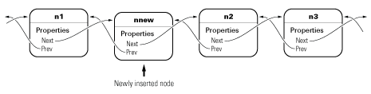
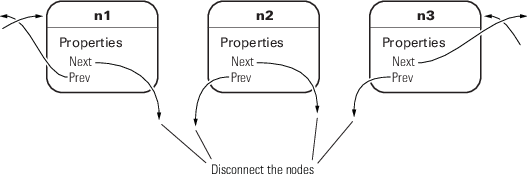
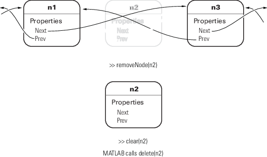

Implementing Linked Lists with Classes
Class Definition Code
For the class definition code listing, see dlnode Class Synopsis.
To use the class, create a folder named @dlnode and save dlnode.m to this folder. The parent folder of @dlnode must be on the MATLAB® path. Alternatively, save dlnode.m to a path folder.
dlnode Class Design
dlnode is a class for creating doubly linked lists in which each node contains:
Data array
Handle to the next node
Handle to the previous node
Each node has methods that enable the node to be:
Inserted before a specified node in a linked list
Inserted after a specific node in a linked list
Removed from a list
Class Properties
The dlnode class implements each node as a handle object with three properties:
Data— Contains the data for this nodeNext— Contains the handle of the next node in the list (SetAccess = private)Prev— Contains the handle of the previous node in the list (SetAccess = private)
This diagram shows a list with three-nodes n1, n2, and n3. It also shows how the nodes reference the next and previous nodes.

Class Methods
The dlnode class implements the following methods:
dlnode— Construct a node and assign the value passed as an input to theDatapropertyinsertAfter— Insert this node after the specified nodeinsertBefore— Insert this node before the specified noderemoveNode— Remove this node from the list and reconnect the remaining nodesclearList— Remove large lists efficientlydelete— Private method called by MATLAB when deleting the list.
Create Doubly Linked List
Create a node by passing the node's data to the dlnode class constructor. For example, these statements create three nodes with data values 1, 2, and 3:
n1 = dlnode(1); n2 = dlnode(2); n3 = dlnode(3);
Build these nodes into a doubly linked list using the class methods designed for this purpose:
n2.insertAfter(n1) % Insert n2 after n1 n3.insertAfter(n2) % Insert n3 after n2
Now the three nodes are linked:
n1.Next % Points to n2ans =
dlnode with properties:
Data: 2
Next: [1x1 dlnode]
Prev: [1x1 dlnode]n2.Next.Prev % Points back to n2ans =
dlnode with properties:
Data: 2
Next: [1x1 dlnode]
Prev: [1x1 dlnode]n1.Next.Next % Points to n3ans =
dlnode with properties:
Data: 3
Next: []
Prev: [1x1 dlnode]n3.Prev.Prev % Points to n1ans =
dlnode with properties:
Data: 1
Next: [1x1 dlnode]
Prev: []Why Use a Handle Class for Linked Lists?
Each node is unique in that no two nodes can be previous to or next to the same node.
For example, a node object, node, contains in its
Next property the handle of the next node object,
node.Next. Similarly, the Prev property
contains the handle of the previous node, node.Prev. Using the
three-node linked list defined in the previous section, you can demonstrate that the
following statements are true:
n1.Next == n2 n2.Prev == n1
Now suppose that you assign n2 to x:
x = n2;
The following two equalities are then true:
x == n1.Next x.Prev == n1
But each instance of a node is unique so there is only one node in the list that can satisfy the conditions of being equal to n1.Next and having a Prev property that contains a handle to n1. Therefore, x must point to the same node as n2.
There has to be a way for multiple variables to refer to the same object. The MATLAB
handle class provides a means for both x and n2 to refer to the same node.
The handle class defines the eq method (use methods('handle') to list the handle class methods), which enables the use of the == operator with all handle objects.
Related Information
For more information on handle classes, see Comparison of Handle and Value Classes.
dlnode Class Synopsis
This section describes the implementation of the dlnode class.
| Example Code | Discussion |
|---|---|
classdef dlnode < handle
| |
properties
Data
end | dlnode Class Design |
properties (SetAccess = private)
Next = dlnode.empty
Prev = dlnode.empty
end
| Property Attributes: Initialize these properties to For general information about properties, see Property Syntax |
methods | For general information about methods, see Methods in Class Design |
function node = dlnode(Data) if (nargin > 0) node.Data = Data; end end | Creating an individual node (not connected) requires only the data. For general information about constructors, see Guidelines for Constructors |
function insertAfter(newNode, nodeBefore) removeNode(newNode); newNode.Next = nodeBefore.Next; newNode.Prev = nodeBefore; if ~isempty(nodeBefore.Next) nodeBefore.Next.Prev = newNode; end nodeBefore.Next = newNode; end | Insert node into a doubly linked list after specified node, or link the two specified nodes if there is not already a list. Assigns the correct values for |
function insertBefore(newNode, nodeAfter) removeNode(newNode); newNode.Next = nodeAfter; newNode.Prev = nodeAfter.Prev; if ~isempty(nodeAfter.Prev) nodeAfter.Prev.Next = newNode; end nodeAfter.Prev = newNode; end | Insert node into doubly linked list before specified node, or link the two specified nodes if there is not already a list. This method assigns correct values for See Insert Nodes |
function removeNode(node) if ~isscalar(node) error('Nodes must be scalar') end prevNode = node.Prev; nextNode = node.Next; if ~isempty(prevNode) prevNode.Next = nextNode; end if ~isempty(nextNode) nextNode.Prev = prevNode; end node.Next = = dlnode.empty; node.Prev = = dlnode.empty; end | Remove node and fix the list so that remaining nodes are properly connected. Once there are no references to node, MATLAB deletes it. |
function clearList(node) prev = node.Prev; next = node.Next; removeNode(node) while ~isempty(next) node = next; next = node.Next; removeNode(node); end while ~isempty(prev) node = prev; prev = node.Prev; removeNode(node) end end | Avoid recursive calls to destructor as a result of clearing the list variable. Loop through list to disconnect each node. When there are no references to a node, MATLAB calls the class destructor (see the |
methods (Access = private)
function delete(node)
clearList(node)
end
| Class destructor method. MATLAB calls the |
end end | End of private methods and end of class definition. |
Class Properties
Only dlnode class methods can set the Next and Prev properties because these properties have private set access (SetAccess = private). Using private set access prevents client code from performing any incorrect operation with these properties. The dlnode class methods perform all the operations that are allowed on these nodes.
The Data property has public set and get access, allowing you to query and modify the value of Data as required.
Here is how the dlnode class defines the properties:
properties Data end properties(SetAccess = private) Next = dlnode.empty; Prev = dlnode.empty; end
Construct a Node Object
To create a node object, specify the node's data as an argument to the constructor:
function node = dlnode(Data) if nargin > 0 node.Data = Data; end end
Insert Nodes
There are two methods for inserting nodes into the list — insertAfter and insertBefore. These methods perform similar operations, so this section describes only insertAfter in detail.
function insertAfter(newNode, nodeBefore) removeNode(newNode); newNode.Next = nodeBefore.Next; newNode.Prev = nodeBefore; if ~isempty(nodeBefore.Next) nodeBefore.Next.Prev = newNode; end nodeBefore.Next = newNode; end
How insertAfter Works. First, insertAfter calls the removeNode method to ensure that the new node is not connected to any other nodes. Then, insertAfter assigns the newNode
Next and Prev properties to the handles of the nodes that are after and before the newNode location in the list.
For example, suppose that you want to insert a new node, nnew, after an existing node, n1, in a list containing n1—n2—n3.
First, create nnew:
nnew = dlnode(rand(3));
Next, call insertAfter to insert nnew into the list after n1:
nnew.insertAfter(n1)
The insertAfter method performs the following steps to insert nnew in the list between n1 and n2:
Set
nnew.Nextton1.Next(n1.Nextisn2):nnew.Next = n1.Next;
Set
nnew.Prevton1nnew.Prev = n1;
If
n1.Nextis not empty, thenn1.Nextis stilln2, son1.Next.Previsn2.Prev, which is set tonnewn1.Next.Prev = nnew;
n1.Nextis now set tonnewn1.Next = nnew;

Remove a Node
The removeNode method removes a node from a list and reconnects the remaining nodes. The insertBefore and insertAfter methods always call removeNode on the node to insert before attempting to connect it to a linked list.
Calling removeNode ensures that the node is in a known state before assigning it to the Next or Prev property:
function removeNode(node) if ~isscalar(node) error('Input must be scalar') end prevNode = node.Prev; nextNode = node.Next; if ~isempty(prevNode) prevNode.Next = nextNode; end if ~isempty(nextNode) nextNode.Prev = prevNode; end node.Next = dlnode.empty; node.Prev = dlnode.empty; end
For example, suppose that you remove n2 from a three-node list (n1–n2–n3):
n2.removeNode;

removeNode removes n2 from the list and reconnects the remaining nodes with the following steps:
n1 = n2.Prev; n3 = n2.Next; if n1 exists, then n1.Next = n3; if n3 exists, then n3.Prev = n1
The list is rejoined because n1 connects to n3 and n3 connects to n1. The final step is to ensure that n2.Next and n2.Prev are both empty (that is, n2 is not connected):
n2.Next = dlnode.empty; n2.Prev = dlnode.empty;
Removing a Node from a List
Suppose that you create a list with 10 nodes and save the handle to the head of the list:
head = dlnode(1); for i = 10:-1:2 new = dlnode(i); insertAfter(new,head); end
Now remove the third node (Data property assigned the value 3):
removeNode(head.Next.Next)
Now the third node in the list has a data value of 4:
head.Next.Next
ans =
dlnode with properties:
Data: 4
Next: [1x1 dlnode]
Prev: [1x1 dlnode]And the previous node has a Data value of 2:
head.Next
ans =
dlnode with properties:
Data: 2
Next: [1x1 dlnode]
Prev: [1x1 dlnode]Delete a Node
To delete a node, call the removeNode method on that node. The removeNode method disconnects the node and reconnects the list before allowing MATLAB to destroy the removed node. MATLAB destroys the node once references to it by other nodes are removed and the list is reconnected.

Delete the List
When you create a linked list and assign a variable that contains, for example, the head or tail of the list, clearing that variable causes the destructor to recurse through the entire list. With large enough list, clearing the list variable can result in MATLAB exceeding its recursion limit.
The clearList method avoids recursion and improves the performance of deleting large lists by looping over the list and disconnecting each node. clearList accepts the handle of any node in the list and removes the remaining nodes.
function clearList(node) if ~isscalar(node) error('Input must be scalar') end prev = node.Prev; next = node.Next; removeNode(node) while ~isempty(next) node = next; next = node.Next; removeNode(node); end while ~isempty(prev) node = prev; prev = node.Prev; removeNode(node) end end
For example, suppose that you create a list with many nodes:
head = dlnode(1); for k = 100000:-1:2 nextNode = dlnode(k); insertAfter(nextNode,head) end
The variable head contains the handle to the node at the head of the list:
head
head =
dlnode with properties:
Data: 1
Next: [1x1 dlnode]
Prev: []head.Next
ans =
dlnode with properties:
Data: 2
Next: [1x1 dlnode]
Prev: [1x1 dlnode]You can call clearList to remove the whole list:
clearList(head)
The only nodes that have not been deleted by MATLAB are those nodes for which there exists an explicit reference. In this case, those references are head and nextNode:
head
head =
dlnode with properties:
Data: 1
Next: []
Prev: []
nextNode
nextNode =
dlnode with properties:
Data: 2
Next: []
Prev: []You can remove these nodes by clearing the variables:
clear head nextNode
The delete Method
The delete method simply calls the clearList method:
methods (Access = private) function delete(node) clearList(node) end end
The delete method has private access to prevent users from calling delete when intending to delete a single node. MATLAB calls delete implicitly when the list is destroyed.
To delete a single node from the list, use the removeNode method.
Specialize the dlnode Class
The dlnode class implements a doubly linked list and provides a convenient starting point for creating more specialized types of linked lists. For example, suppose that you want to create a list in which each node has a name.
Rather than copying the code used to implement the dlnode class, and then expanding upon it, you can derive a new class from dlnode (that is, subclass dlnode). You can create a class that has all the features of dlnode and also defines its own additional features. And because dlnode is a handle class, this new class is a handle class too.
NamedNode Class Definition
To use the class, create a folder named @NamedNode and save NamedNode.m to this folder. The parent folder of @NamedNode must be on the MATLAB path. Alternatively, save NamedNode.m to a path folder.
The following class definition shows how to derive the NamedNode class from the dlnode class:
classdef NamedNode < dlnode properties Name = '' end methods function n = NamedNode (name,data) if nargin == 0 name = ''; data = []; end n = n@dlnode(data); n.Name = name; end end end
The NamedNode class adds a Name property to store the node name.
The constructor calls the class constructor for the dlnode class, and then assigns a value to the Name property.
Use NamedNode to Create a Doubly Linked List
Use the NamedNode class like the dlnode
class, except that you specify a name for each node object. For example:
n(1) = NamedNode('First Node',100); n(2) = NamedNode('Second Node',200); n(3) = NamedNode('Third Node',300);
Now use the insert methods inherited from dlnode to build the list:
n(2).insertAfter(n(1)) n(3).insertAfter(n(2))
A single node displays its name and data when you query its properties:
n(1).Next
ans =
NamedNode with properties:
Name: 'Second Node'
Data: 200
Next: [1x1 NamedNode]
Prev: [1x1 NamedNode]n(1).Next.Next
ans =
NamedNode with properties:
Name: 'Third Node'
Data: 300
Next: []
Prev: [1x1 NamedNode]n(3).Prev.Prev
ans =
NamedNode with properties:
Name: 'First Node'
Data: 100
Next: [1x1 NamedNode]
Prev: []